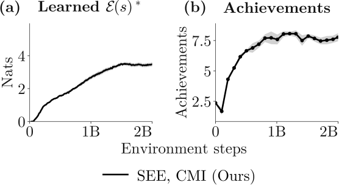

Abstract
Empowerment measures the capacity of an agent to actively control its environment. In this work, we explain the connection between skill learning and empowerment. While skill learning is not empowerment, we introduce a simple scalable recipe for empowerment maximization: empowerment corresponds to the number of executable skills from a state, so maximizing empowerment corresponds to reaching states that are good starting points for many skills. Our recipe applies to arbitrary underlying skill learning methods. Whereas most prior work on empowerment looks at tabular settings, this recipe enables us to study empowerment at a scale where we can realize theoretically-predicted but empirically-elusive properties of empowerment (e.g., gathering resources, environment modification, survival). Experiments show that empowerment maximization unlocks interesting emergent properties, such as building a house in Crafter.
Introduction
In this work, we scale empowerment [23] maximization to a regime where theorized intelligent behaviors can emerge. Our starting point is the observation that empowerment maximization is closely related to unsupervised skill discovery (USD) methods. The goal of empowerment maximization is to reach states from which it is easy to reach a diverse set of states. Relatedly, USD methods aim to learn a diverse set of different “skills”. However, unlike prior empowerment-maximization methods that have struggled to scale, modern skill discovery methods can learn interpretable, diverse behaviors in continuous, high-dimensional tasks. As we will show, a particular class of USD methods called mutual information skill learning (MISL) measures the point-wise empowerment: at any particular state, the number of different skills an agent can execute from that state lower bounds its empowerment. In other words, an agent is empowered at states where it has many options, or skills. Thus, while skill learning methods do not directly learn policies that maximize empowerment, we can use scalable skill learning methods to estimate the empowerment of a particular state; we can then train another policy that ascends the empowerment landscape to get to states where it has many options.
Defining Empowerment
To make the definition of behavior precise, we will consider a \(z\) and context-conditioned policy \(\pi(a \mid s, z; s_0) \in \Pi_\mathcal{Z}\), with \(s_0\) taken to be the starting context (in our case, a starting state \(s_0\)) of the behavior. For a specific “skill vector” \(z\) we will refer to this policy as a “skill”. Importantly, the context state \(s_0\) and the current state \(s\) are two different objects—the context determines the “start point” of the skill, while current state tells the agent what to do now.
Let \(p(z)\) be a distribution over these skills, which we will assume to be uniform (without loss of generality [19]).
Potential empowerment. Let \(p(z)\) be given, and let \(S_+ \sim p^\pi(s_+\mid s_0,z)\) be a sample from the discounted state occupancy measure of skill \(\pi(a \mid s, z)\). Then, the potential empowerment of state \(s\) is the conditional mutual information between the skill vector \(z\) and the future state \(S_+\): \[\mathcal{E}_{\mathrm{pot}}(s_0) \triangleq \max_{\pi \in \Pi_\mathcal{Z}} \underbrace{I^\pi(Z;S_+ \mid S_0=s_0)}_{\triangleq \mathcal{E}_{\mathrm{eff}}(\pi, s_0)}.\]
The potential empowerment can be understood as the maximum number of bits that the skill vector \(Z\) can broadcast into the future (\(S_+\)), starting from state \(s_0\). Our goal is to learn a policy \(\pi_{\mathrm{pot}}\) that uses this empowerment as a reward, effectively navigating to states where it can broadcast many bits into the future (i.e., exert a strong influence on future outcomes).
Skills Estimate Empowerment (SEE): A Scalable Algorithm for Maximizing Empowerment
Method Summary
We adapt contrastive successor features (CSF) [45], a scalable MISL method, to learn skills, which gives us (a lower bound on) the potential empowerment of states \(\mathcal{E}(s)\). Then, we train a second potential empowement policy using the estimated potential empowerment as a reward. This policy navigates to states from which it can exert control.
Two-stage rollout
For large state spaces, we cannot simply learn skills for every starting state \(s_0\) and then maximize the potential empowerment over the constructed field. Instead, we consider a two-stage rollout scheme: within each episode of data collection, we first roll out the potential empowerment policy and then roll out one of the effective empowerment policies (i.e., sample a skill \(z\) and execute \(\pi_{\mathrm{eff}}(a \mid s,z;s_0)\)) (Appendix A.2, Appendix A.4). We can interpret skills as local probes of empowerment, where the potential empowerment policy ascends the empowerment landscape estimated by these probes.
Experiments
Scaling and Baselines
Discrete Setting: Craftax-Classic. SEE scales to high-dimensional, discrete settings. In Craftax-Classic (Figure 1d), the agent consistently unlocks \(7-8\) out of 22 total achievements per rollout from \(1 \times 10^{9}\) environment steps. These metrics exceed the best previously-reported success rates of intrinsic exploration methods in Crafter, which obtains \(\sim5.5\) achievements with the same training budget [28]. The estimated empowerment also rises steadily (Figure 2), tracking the development of interesting behavior. Implementation details and hyperparameters for Craftax-Classic are in Appendix B.2.

![Potential empowerment and control increases over training (continuous settings). We compare SEE (Black) and baselines VIM (Orange) and LatentGCE (Green). (a) SEE visits diverse states across all environments, which is necessary to learn correct models and decoders of dynamics and skills. (b) SEE consistently learns potential empowerment policies that navigate towards central regions of the arena in Ant, to the ball in AntSoccer, and to the blocks in BuilderBench. VIM is unstable and largely stationary in Ant and AntSoccer. LatentGCE is stationary in Ant. Five seeds for SEE and LatentGCE and three for VIM, p.m. standard error. Eval metrics averaged over \(128\) randomized environments.](./static/figures/scaling/paper/curves/metrics_continuous_control.svg)
Emergent Behaviors
Accruing and spending power. Across all environments, the learned switching policies accrue empowerment while executing the potential empowerment policy (Figure 4, white traces). The policy gathers empowerment by walking to the center of the arena in Ant, getting close to the soccer ball in AntSoccer, getting close to the blocks in BuilderBench, and gathering resources and tools in Crafter. Then, the policies spend the empowerment when executing skills (Figure 4, colorful traces), spreading out in the arena (Ant), kicking the ball (AntSoccer), and moving the blocks (BuilderBench).
![Potential empowerment policies accrue empowerment, while skills spend it. (Top row) Over the course of the trajectory, the potential empowerment policies (white lines) “gather” empowerment, reaching empowered states. Correspondingly, the empowerment estimates increase over the course of the trajectory. (Bottom row) At the gray skill switch mark, executing a skill (colorful lines) from the reached state “spends” the empowerment, reflecting the intuition that potential empowerment policies collect power and effective empowerment spends power. Traces use one seed and four skill branches per environment.](./static/figures/scaling/paper/traces/trace_values_row.svg)
Gathering resources and tool use. Resource-gathering and tool use enable empowerment-maximizing agents to exert control over the environment. In the Crafter environment, the trained potential empowerment agent learns to acquire many diverse materials (e.g. wood, saplings), such that its potential empowerment increases over the course of the episode. From that potentially-empowered state, the agent executes diverse skills such as building houses, mining, and using the gathered resources to craft new tools (Figure 5).
Modifying the environment. Empowered agents learn to perturb their environment to maximize future control. This phenomena has been documented in prior works [35] in simple tabular settings. In the scaled up Crafter setting, we observe more complex “building” behaviors, such as learning to construct a house when defending against enemies (Figure 5).
![Empowerment maximization has interesting emergent behaviors. (a) In Crafter, the empowered agent quickly accumulates many resources and uses a tool (crafting table, wooden icon with saw) to craft other tools in the game. Resources boxed in white. (b) Early in training, the agent learns to build a “house” consisting of plants and crafting tables. Built tiles boxed in white. (c) The agent also naturally learns to survive, avoiding and killing enemies like zombies and skeletons. One seed per example; further qualitative examples across seeds in Appendix E.](./static/figures/scaling/paper/emergent/emergent_behaviors.svg)
Survival. In death, an agent no longer has any control and, thus, has no empowerment. Therefore, agents maximizing empowerment should learn survival skills. In Crafter, we see that empowerment-maximizing agents naturally learn survival skills like killing and dodging enemies. Importantly, the empowerment-maximizing agent learns behavior distinct from simply training a survival reward (e.g. \(r=1\) for every step, \(r=0\) upon termination), which does not learn more complex crafting behaviors and only prioritizes survival skills.
Discussion
Despite the conceptual appeal of empowerment as a tool for understanding natural agents and building artificial agents, its seeming computational intractability has caused prior work to resort to approximations that do not learn one policy that “keeps its options open” [22]. In providing a conceptual link between skill learning methods and empowerment, we provide a method that maximizes potential and effective empowerment, two policies that measure controllability in distinct ways. We present key practical considerations to learn empowerment maximization policies in high-DoF settings. Future work should investigate simplified parameterizations of empowerment maximization that can resolve practical considerations detailed within our method, at scale. Furthermore, our work highlights the sensitivity of empowerment maximization to representations of the world, with open questions on the interplay between representations of the world and empowerment maximization [8].
BibTeX
@misc{ji2026scaling,
title={Scaling Empowered Agents},
author={Ji, Catherine and Myers, Vivek and Lin, Joshua and Wingate, Alexandra and Levine, Sergey and Eysenbach, Benjamin},
year={2026}
}